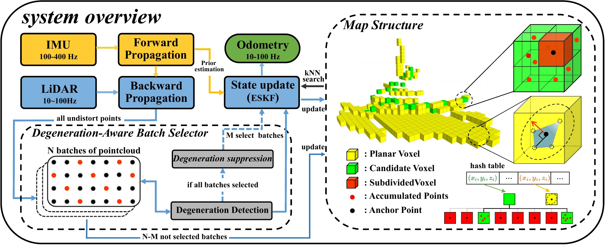

分批选择配准点
将去畸变后的扫描点分批处理。一旦已有观测能充分约束位姿，就停止追加批次，用选中的点更新位姿。
论文已录用 IEEE/ASME T-Mech
1 香港大学
2 哈尔滨工业大学（深圳）
* 同等贡献 · † 通讯作者
本文提出 DALIO，一种新的激光雷达–惯性里程计（LIO）框架。它在显著降低计算复杂度的同时，仍能在多种环境中稳健定位。DALIO 的核心思路是“按需计算”：其退化感知批次选择模块实时评估环境对位姿的几何约束，动态调整参与扫描配准的点数。当某些方向上的约束不足时，退化抑制模块会滤除观测在这些方向上对状态更新的影响，避免退化方向上的噪声干扰更新，使状态估计更稳定。DALIO 还采用了自适应多分辨率建图策略 MultiMap：保留关键的原始观测点，仅在需要的区域提高地图分辨率，从而减少内存占用，并支持在大尺度和小尺度场景中精确定位。作者在公开数据集、多种无人机平台和计算资源受限的嵌入式系统上进行了广泛评估。结果表明，DALIO 保持了有竞争力的定位精度，与 FAST-LIO2 相比，运行时间最多可缩短 68%，并能在不同硬件平台上实时运行。
方法
一次位姿更新需要多少个点？DALIO 根据当前扫描的几何结构来判断。已有观测足以约束位姿时，就不再为配准追加点；地图更新仍使用来自整帧扫描的观测。

将去畸变后的扫描点分批处理。一旦已有观测能充分约束位姿，就停止追加批次，用选中的点更新位姿。
如果用完所有批次后仍存在退化，就抑制激光雷达观测在弱约束方向上对位姿的修正。
粗体素足以描述局部几何时，只保留一个有代表性的观测点；如果局部点云不能用单个平面描述，就继续细分，保留其几何细节。
实地实验

无人机从建筑物内飞出，在室外绕行一圈后返回室内。全程 181 m，最高速度为 5 m/s。MultiMap 保留了室内的精细结构，又不必用最高分辨率存储整个室外场景。
论文插图 轨迹颜色表示飞行速度。MultiMap 局部图使用另一套色标：绿色表示分辨率较低，红色表示分辨率较高。
交互式地图
基准测试
对于有真值轨迹的序列，论文用均方根误差（RMSE）衡量估计轨迹与真值的偏差；对于回到起点的序列，则用首尾误差（E2E）衡量估计轨迹起点与终点之间的距离。两项误差的单位均为米，越小越好。
| 序列 | DALIO | DALIO† | DALIO* | FAST-LIO2 | FASTER-LIO | VoxelMap | DLIO | DALI-SLAM |
|---|---|---|---|---|---|---|---|---|
| nclt1 | 1.34 | 1.35 | 1.31 | 1.21 | 1.24 | 1.28 | 1.26 | 1.48 |
| nclt2 | 1.56 | 1.55 | 1.61 | 2.03 | 1.59 | 1.44 | 1.62 | 2.14 |
| nclt3 | 0.98 | 1.00 | 0.92 | 0.88 | 1.03 | 0.99 | 1.05 | 0.94 |
| ncd1 | 0.33 | 0.34 | 0.32 | 0.35 | 0.32 | 0.31 | 0.33 | 0.37 |
| ncd2 | 0.32 | 0.31 | 0.35 | 0.35 | 0.38 | 0.33 | 0.30 | 0.36 |
| ncd3 | 0.12 | 0.12 | 0.12 | 0.11 | 0.14 | 0.13 | 0.13 | 0.12 |
| m3o1 | 0.20 | 0.21 | 0.21 | 0.23 | 0.25 | 0.24 | 0.26 | 0.22 |
| m3o2 | 0.19 | 0.20 | 0.19 | 0.30 | 0.20 | 0.94 | 0.21 | 0.28 |
| 序列 | DALIO | DALIO† | DALIO* | FAST-LIO2 | FASTER-LIO | VoxelMap | DLIO | DALI-SLAM |
|---|---|---|---|---|---|---|---|---|
| hku1 | 0.04 | 0.04 | 0.04 | 0.03 | 0.11 | 0.04 | 0.12 | 0.05 |
| hku2 | 0.04 | 0.06 | 0.03 | 0.04 | 0.04 | 0.04 | 0.05 | 0.09 |
| hku3 | 0.03 | 0.03 | 0.04 | 1.96 | 2.05 | 0.10 | 2.12 | 1.88 |
| ust1 | 0.65 | 0.91 | 0.93 | 3.38 | 3.87 | 4.91 | 3.96 | 3.52 |
| ust2 | 1.32 | 1.17 | 0.97 | 2.93 | 2.77 | 3.44 | 2.84 | 3.10 |
| ust3 | 0.04 | 0.05 | 0.02 | 0.03 | 0.04 | 0.04 | 0.05 | 0.04 |
| m3i1 | 0.04 | 0.56 | 0.54 | 1.03 | 0.98 | 3.75 | 1.04 | 1.08 |
| m3i2 | 0.45 | 1.86 | 0.45 | 3.43 | 5.53 | – | 0.68 | 1.36 |
| m3i3 | 0.05 | 0.06 | 0.04 | 0.03 | 0.04 | 0.04 | 0.05 | 0.04 |
| dege1 | 1.01 | 1.58 | 7.35 | 3.13 | 2.28 | 12.85 | 7.41 | 7.02 |
| dege2 | 1.32 | 8.12 | 5.86 | 6.45 | 15.82 | – | 5.90 | 6.58 |
| self1 | 0.06 | 0.09 | 0.08 | 0.11 | 0.07 | 0.09 | 0.08 | 0.12 |
| self2 | 0.04 | 2.62 | 0.16 | 9.51 | – | – | – | 9.51 |
| self3 | 0.02 | 0.60 | 0.05 | 1.09 | 0.29 | 0.01 | 0.11 | 1.03 |
| self4 | 0.03 | 0.17 | 0.02 | 0.27 | 0.44 | 4.35 | 0.06 | 0.56 |
粗体标出每条序列的最低误差，包括并列项。短横线（–）表示论文未报告结果。
DALIO† 关闭退化抑制；DALIO* 使用全部扫描点进行配准。DALI-SLAM 的评测仅使用其前端里程计模块。
论文实验

每格依次列出回环序列的平均首尾误差（m）和单帧耗时（ms）。两项指标均越小越好。
| 地图后端 | HKU | UST | Self |
|---|---|---|---|
| MultiMap | 0.04 / 12.50 | 0.64 / 14.63 | 0.08 / 18.10 |
| ikd-Tree High | 0.44 / 16.22 | 2.21 / 19.17 | 0.64 / 22.17 |
| ikd-Tree Low | 0.70 / 12.56 | 2.12 / 16.46 | 2.75 / 20.56 |
两种固定分辨率的基线分别为 High（0.125 m）和 Low（0.5 m）。各数据集的完整指标和实验平台说明见论文。
独立实地实验
在另一项高速飞行实验中，无人机沿五个航点飞行两圈，最高速度达到 8 m/s。